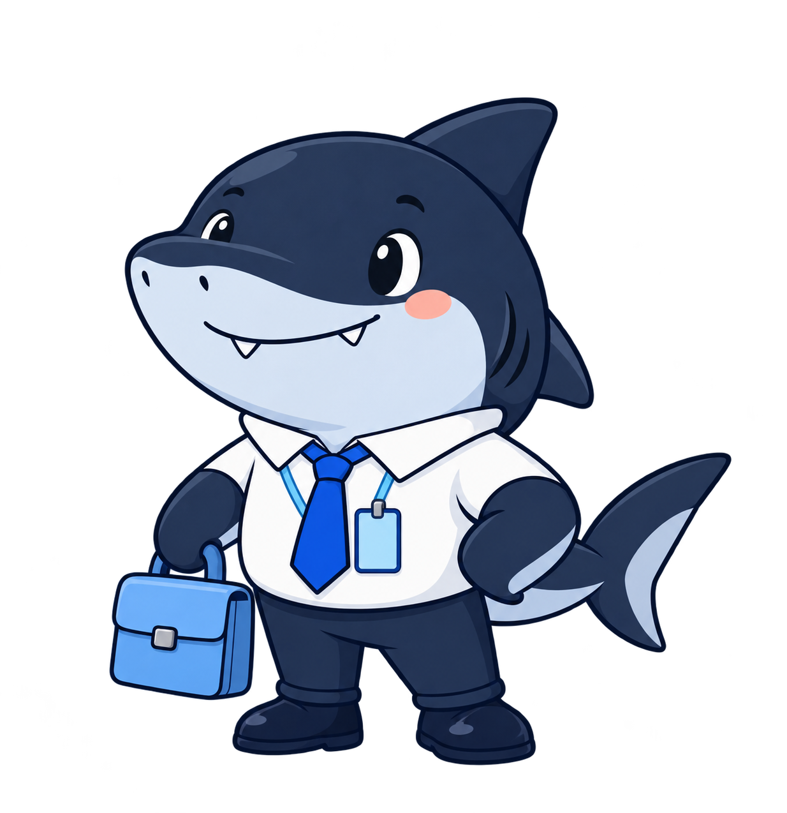

BUSAN WORK CLUB부산 에디션 03
푸른 부산에서,
내 다음 회사를 만나요.
당신은 부산의 어떤 회사에 취업하게 될까요?
갈매기·국밥·북항상어와 함께 찾아보세요.
내 회사 뽑으러 가기 실제 기업 60곳 · 공개 자료
우리의 다음 출근지는?HELLO, BUSAN!

설레는 첫 출근, 같이 준비해요.
01 나만의 다음 회사 찾기
🏢 랜덤 부산 취업하기
어떤 방식으로 만나볼까요?
데이터를 불러오는 중입니다.
현재 추첨 대상—개 기업
가입 없이 가볍게, 몇 번이든 새롭게.
—출처 확인 기업
0나의 누적 취업
—만날 수 있는 업종
YOUR NEXT WORKPLACE아직 만나지 않은 가능성
?✦+
첫 출근, 어디로 할까요?
뜻밖의 회사가
새로운 시작이 될지도.
랜덤 취업 버튼을 눌러주세요.
실제 부산 기업의 정보와 출처를 함께 보여드려요.
ⓘ 취업을 상상하는 기업 탐색 도구입니다. 실제 채용·합격 확률을 뜻하지 않으며, 확인되지 않은 수치는 만들지 않습니다.
MY CAREER JOURNEY
최근 만난 회사 0
↗
아직 출근 기록이 없어요. 첫 번째 회사를 만나보세요.
최근 20회가 이 기기에 저장됩니다.MEET THE LOCAL COMPANIES
출처 확인 중부산에는 이런 회사도 있어요.
OPEN DATA, HONEST POSSIBILITIES재미는 가볍게.
재미는 가볍게.
데이터는 진지하게.
기업 이름 뒤에 있는 정보도 중요하니까요.
무엇을 확인했고, 무엇이 비어 있는지 공개합니다.
수집된 기업의 업종 분포
기업 수 기준부산 전체의 고용분포와 다릅니다. 실제 추첨 가중치는 업종별 종사자 수를 사용합니다.
빈칸도 정보입니다.
전국 인원을 부산 인원으로 사용하지 않습니다. 연봉·근속·복지는 확인된 자료만 표시합니다. 블라인드 평점은 재배포 권한을 확인하지 못해 제공하지 않습니다.
조회일 확인 중출처에서 시작하는 신뢰
기업별 상세 출처와 기준시점은 결과 카드에서 확인할 수 있습니다. 자료는 과거 시점의 정보일 수 있으며 현재 채용이나 영업 상태를 보증하지 않습니다.